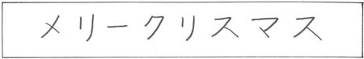

### Please help me out by completing a Mid-Quarter Teaching Feedback form! <https://goo.gl/forms/lsnkzZHhy4BFIbgv2> --- # Syllables ### Will Styler - LIGN 111 --- ### Today's Plan - Common Phonological Processes - Syllable Structures - Some Data! - Syllabification --- # Common Phonological Processes --- ### Four Common Types of Phonological Processes - 1) Assimilation - 2) Dissimilation - 3) Insertion / Epenthesis - 4) Deletion / Elision - *(as explained using High-School Drama)* --- ### 1) Assimilation - When sounds change to become more like one another - Also known as: Peer Pressure -  --- ### Example: Nasal Place Assimilation - Yup, HW3 --- ### Extreme Example: Nasal Harmony - When other phones in a word change to match the nasality of a nasal segment -  - "If I'm going to be nasal, you're all going to be nasal with me, damnit!" - <small>From Epeda Pedee, in Rose, S. and Walker, R. (2011). Harmony Systems. In The Handbook of Phonological Theory (eds J. Goldsmith, J. Riggle and A. C. Yu). doi:10.1002/9781444343069.ch8 </small> - This also happens with vowels (e.g. Turkish) and elsewhere --- ### Extreme Example: Vowel Harmony When vowels change to match the other vowels in the word --- ### Tukish has back-front vowel harmony * This means that vowels in a word must be either *all back* or *all front* <!-- .element: class="fragment" --> --- <lang>Turkish</lang><br><ldata>Turkic - Turkey</ldata> *Türkiye’dir* - ‘it is Turkey’ * *kapidir* - ‘it is the door’ * *gündür* - ‘it is day’ * *paltodur* - ‘it is the coat’ * *The vowel in the last syllable changes depending on the other vowels!* --- ### 2) Dissimilation - When sounds change to become *less* like one another - Also known as: High School Rebellion -  --- ### Example: R deletions - The third rural bird juror murderer demurred. - “surprise” /səɹpɹajz/ is usually /səpɹajz/, same with “berserk”. - "Purple" comes from "purpure" - February goes from /fɛbɹuɛɹi/ to [fɛbjuɛɹi] --- ### 3) Insertion / Epenthesis - When a sound pops up to prevent an awkward or undesirable combination - Also known as: Showing up on a friend's bad date -  --- ### Example: Allomorphs with vowels - /dɪʃ/ + /s/ -> [dɪʃɪz] - /ɹat/ + /d/ -> [ɹaɾɪd] - The vowel 'pops in' to stop /ʃs/ and /td/ from being a thing - Languages also LOVE to epenthesize to stop VV --- ### 4) Deletion / Elision - When a sound is removed to stop an awkward or undesirable combination from occurring - Also known as: Uninviting your friend's ex from the party -  --- ### Example: Elision in English - Fifth, /fɪfθs/ -> [fɪθs] - Family, /fæmɪli/ -> [fæmli] - comfortable, /kʌmfərtəbəl/ -> [kʌmftərbəl] --- ### Four Common Types of Phonological Processes - 1) Assimilation (Peer Pressure) - 2) Dissimilation (Rebellion) - 3) Insertion / Epenthesis (Showing up on a friend's date) - 4) Deletion / Elision (Uninviting and unfriending) --- ### There are other phonological processes - They're all awesome - ... but those four are super common --- ### I'm humanizing these patterns for a reason - Before you start looking for a pattern, think about what’s going on and what might trigger it - If you're seeing fronting, look for fronting --- # Syllables --- ### Syllables seem to be pretty important in some languages - English is among them. - English speakers have an intuitive sense of syllables - We use . to mark syllable boundaries in phonology --- ### Let's try - Under - /ʌn.dəɹ/ - Decoagulate - /di.kow.æg.ju.lejt/ - Antipenultimate - /æn.ti.pɛ.nʌl.tɪ.mɪt/ --- ### Linguists break the syllable into three parts  --- ### Linguists break the syllable into three parts  --- ### Let's look at some syllables ---  ---  ---  ---  ---  --- ### Different parts of the syllable act differently  --- ### Parts of the syllable can be "complex" - "dough" (/doʊ/) has a simple onset - "stow" (/stoʊ/) has a complex onset - "diss" (/dɪs/) has a simple coda - "disk" (/dɪsk/) has a complex coda --- ### 'Open' vs. 'Closed' Syllables - A syllable without a coda is 'open' - A syllable with a coda is 'closed' --- ### Different parts of the syllable act differently - The Nucleus is *obligatory* - Onsets are very common, and sometimes required - Codas are complicated --- ### Codas have more constraints - No languages require a coda - Some languages ban codas - Some languages allow simple, but not complex, codas - Some languages restrict what segments can appear in codas - (Usually by natural class) --- ### Not all syllable types are allowed in all languages --- ### What's going on in Hawaiian? <center> <table><tr><td>welaweka</td><td>velvet</td></tr><tr><td>wekeke:</td><td>whiskey</td></tr><tr><td>halaki</td><td>Charlotte</td></tr><tr><td>ma:keke</td><td>market</td></tr><tr><td>kikiki</td><td>ticket</td></tr><tr><td>koloke:</td><td>croquet</td></tr><tr><td>kilipaki</td><td>gilbert</td></tr></table></center> --- ### Hawaiian bans non-CV syllables - Complex onsets and codas are 'simplified' --- ### Japanese does the same  ‘Merry Christmas' - merii kurisumasu <audio controls src="phonmedia/japanese_christmas.mp3"></audio> <small>([Image and Sound Credit](http://japanese.about.com/library/blqow33.htm))</small> --- ### Some languages allow more complexity in syllables --- ### English - 'Sixths' [sɪksθs] - CVCCCC - 'Strengths' (/stɹɛŋkθs/) - CCCVCCCC --- ### Russian - ‘Glance’ - Всгляд (/vzglʲat/) - CCCCVC syllable - ‘Of Construction’ - строительств (/strʌˈʲitʲɛlʲstf/) - CCCVCVCVCCCC --- ### Syllable nuclei are *usually* vowels - ... but not always - When consonants become syllabic, they gain [+syll] --- ### English - 'Able' [ejbl̩] - V.CC - 'Fun and games' [fʌn n̩ gejmz] - CVC C CVCC --- ### Czech - Strč prst skrz krk - ‘Stick your finger down your throat’ - CCCC CCCC CCCC CCC --- ## Let's look at some data! --- ### English Aspiration <center> <table class="tg"> <tr> <th class="tg-xldj">wʌt</th> <th class="tg-0pky">skɪn<br></th> </tr> <tr> <td class="tg-0pky">tʰaɹ</td> <td class="tg-0pky">spun<br></td> </tr> <tr> <td class="tg-0pky">pʰat<br></td> <td class="tg-0pky">spat</td> </tr> <tr> <td class="tg-0pky">ɹɛntʰɪŋ<br></td> <td class="tg-0pky">ɹɪstaɹt<br></td> </tr> <tr> <td class="tg-0pky">kʰjubə</td> <td class="tg-0pky">pʰakʰɪt</td> </tr> <tr> <td class="tg-0pky">staɹ<br></td> <td class="tg-0pky">spɪnstə˞</td> </tr> </table> </center> --- ### English aspiration occurs at the start of the syllable [-cont,-voice] -> [+spread glottis] / .__ --- ### What do these data tell us about possible syllable structures in English? atrocious [ə.ˈtʰro.ʃəs] atlantic [ˌæt̚.ˈlæn.tɪk] acclaim [ə.ˈkʰleɪm] --- ### English doesn't allow /tl/ onsets! - So, apsiration can't occur. --- ### Awesome Spanish data 'the jail' el carcel [el.'kar.sel] 'the coat' el abrigo [e.la.'βri.γo] 'to support children' soportar niños [so.por.ˈtar.ni.'ɲos] 'to bear insults' soportar insultos [so.por.ˈta.rin.ˈsul.tos] 'Some blows' Unos golpes [u.nos.'gol.pes] 'Some sheets' Unas hojas [u.na.'so.has] --- ### Spanish phrases resyllabify regularly - CV.CV.CV is preferred - Words will be re-combined to move towards CV.CV.CV where possible - Las hojas [la.'so.has] - This is called 'enlace' in Spanish --- ### English Phonotactics There's something different about the distribution of 'lax' vowels /ɪ ɛ ʊ æ ʌ/ vs 'tense' vowels /i eɪ a oʊ u ɜ˞/ Why do we have "see, say, sue, so, saw, sir" for the tense vowels, but "sit, set, soot, sat, shut" for the lax ones? Describe the possible distributions of lax and tense vowels in English? --- ### Lax vowels need codas in English! - Put differently, lax vowels only show up in closed syllables --- ### Phonological rules will often reference syllables - Speakers have strong intuitions about them - Languages make strong prohibitions and rules regarding syllables - Rules often have syllable position as triggers - **So, they're good to think about!** --- ## Syllabification --- ### How do we break words into syllables? - 1: Assign every vowel to a nucleus position - 2: Maximize the onsets - Every prevocalic consonant should be placed into an onset - Every other consonant which can also be placed in an onset, should be - 3: Every consonant remaining behind is a coda - **Now, syllabify the words on this slide. Desensitizational reprocessing.** --- ### Wrapping up - Be on the lookout for common phonological processes - Syllables have four parts (Onset, Nucleus, Rime, Coda) - Phonological rules and phenomena often use syllables - Always maximize the onset --- ### Next time - Want more rules? You got it. --- <huge>Thank you!</huge> ---